Fisherman`s Shop
🎣 Fishing Rods
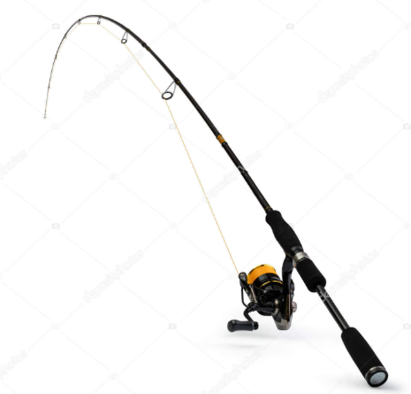
The Berkley Cherrywood HD is an affordable hybrid design with a cork handle, making it a great starter rod for lake and river fishing.
Price: $29.99
Buy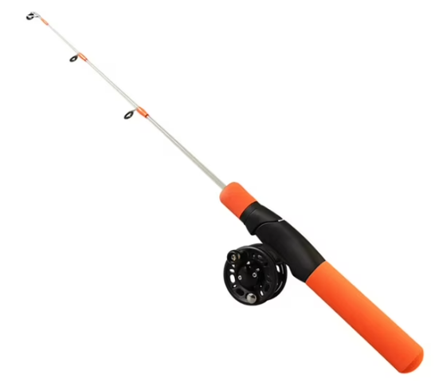
The Shimano Sensilite A features a highly sensitive, lightweight blank that offers smooth performance and reliable durability for frequent recreational angling.
Price: $49.99
Buy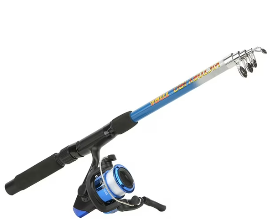
The Daiwa Tatula XT utilizes diagonal carbon tape technology to maximize hook setting power and strength for accurate casting near heavy cover.
Price: $99.99
Buy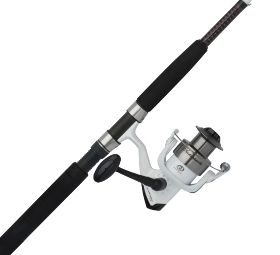
The Redington Classic Trout is a premium 4-piece fly fishing rod that delivers a delicate touch and necessary power for backcountry streams.
Price: $199.99
Buy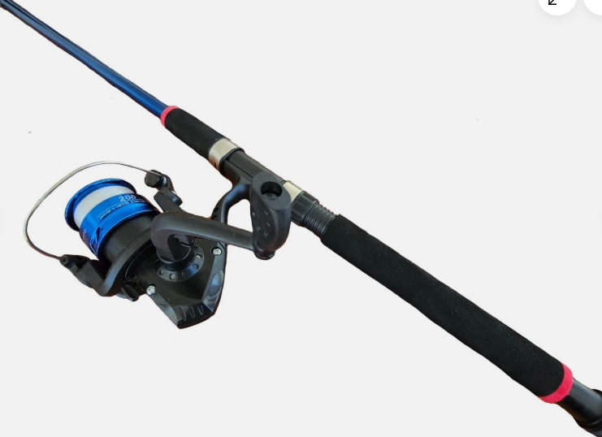
The Nomad Offshore Spin Rods are engineered with heavy-duty Japanese carbon tape to easily handle extreme stress when fighting massive deep-sea ocean predators.
Price: $299.99
Buy🐟 Lures
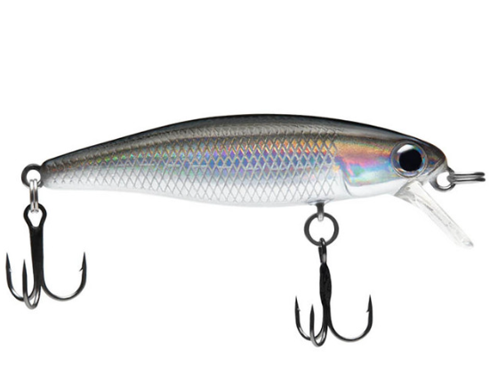
The Z-Man MinnowZ features an incredibly tough paddle tail design that mimics live minnows with unmatched realism, perfect for bass and inshore saltwater species.
Price: $5.49
Buy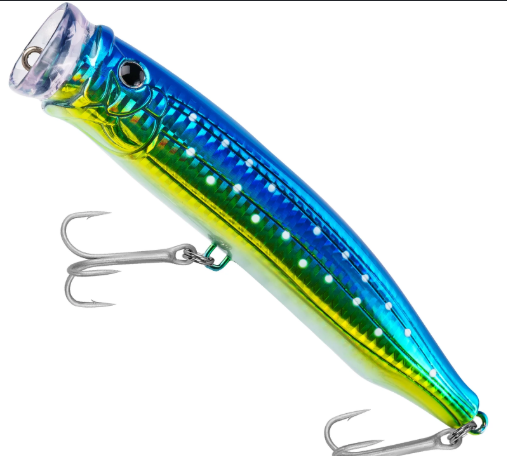
The Strike King Square Bill 1.0 is a silent, shallow-diving hard bait designed to bounce off underwater structures to trigger reaction bites from skittish or pressured fish.
Price: $8.99
Buy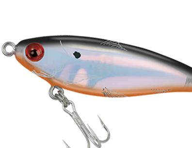
The Googan Squad Filthy Frog uses a clever weedless design to effortlessly slide over thick vegetation, mats, and lily pads for explosive surface strikes.
Price: $7.76
Buy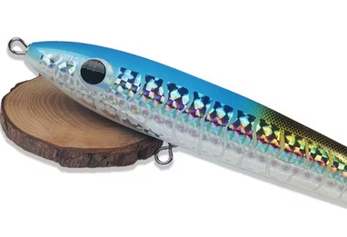
The Clarkspoon 1-RBMS is a highly reflective, chrome-plated saltwater spoon that produces a rapid fluttering flash ideal for fast-moving coastal fish like mackerel.
Price: $7.39
Buy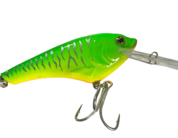
The NLBN 3" Jig Head provides ultimate stability and swimbait security with an oversized screw lock and heavy-duty hook, perfect for deep water jigging setups.
Price: $7.99
Buy🪝 Hooks
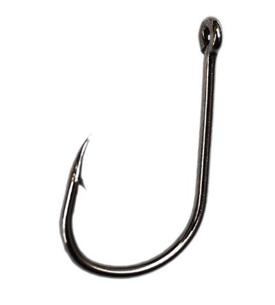
The Gamakatsu Offset Shank Worm Hook is the industry standard for rigging soft plastic baits, designed to keep lures perfectly straight and weedless.
Price: $3.99
Buy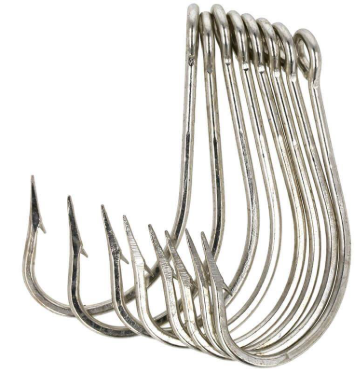
The Owner Mutu Light Circle Hook features a curved point designed to catch fish cleanly in the corner of the mouth, making it ideal for catch-and-release with live bait.
Price: $4.49
Buy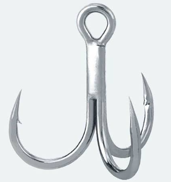
The TroKar EWG Worm Hook offers an extra wide gap to accommodate thick plastic baits, ensuring a reliable hookset on large bass.
Price: $5.29
Buy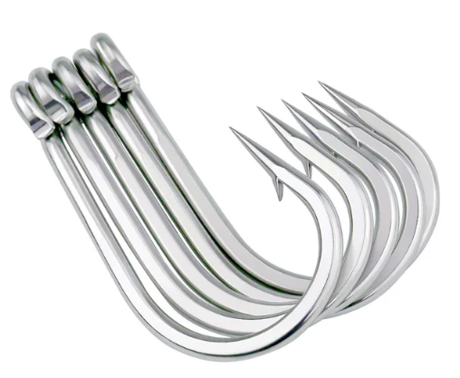
The Mustad Classic O'Shaughnessy is a forged, corrosion-resistant hook built for raw strength when targeting tough saltwater species like snapper and grouper.
Price: $6.99
Buy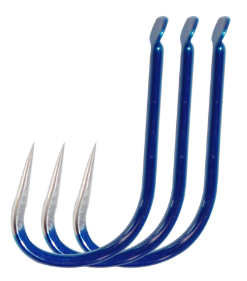
The Owner Twistlock Flashy Swimmer includes a small belly weight and a reflective spinner blade to add extra flash and depth control to soft swimbaits.
Price: $7.49
Buy